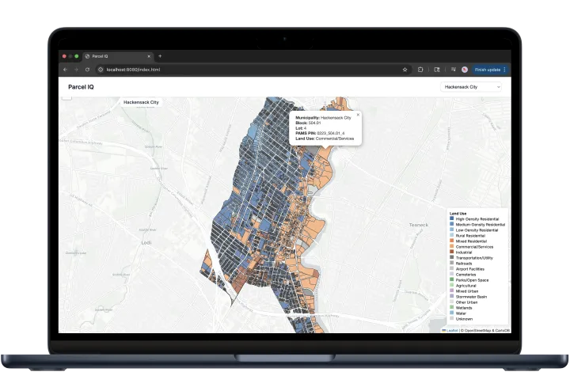
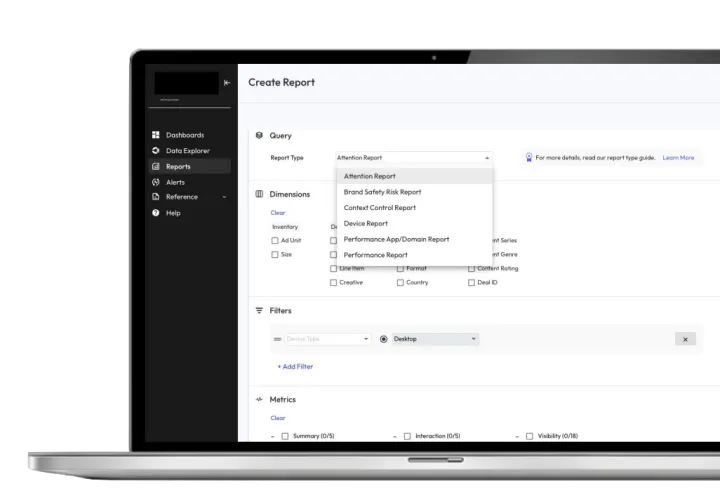
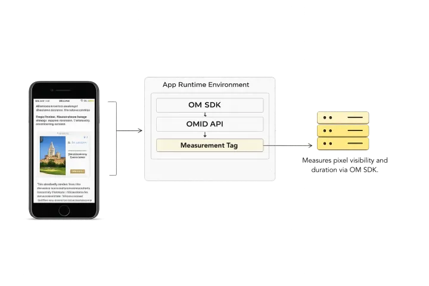
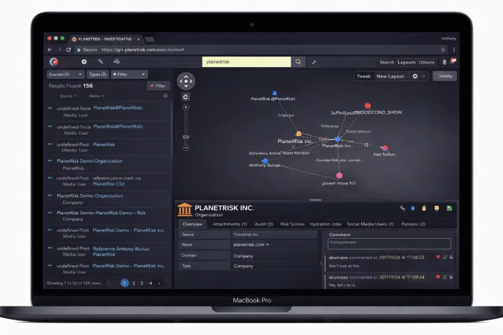
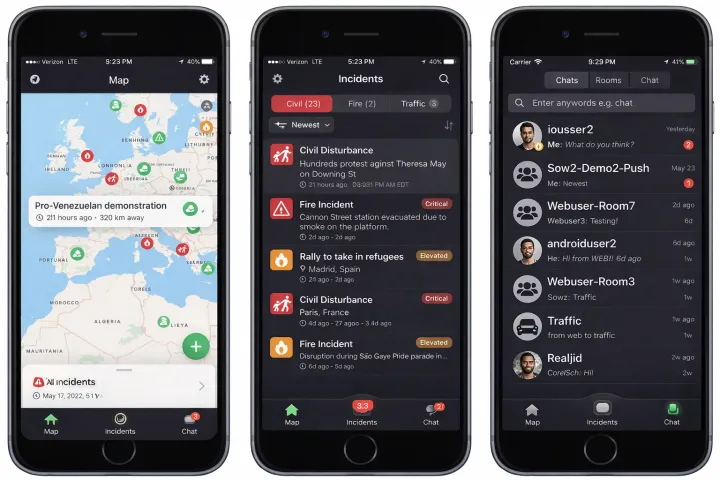
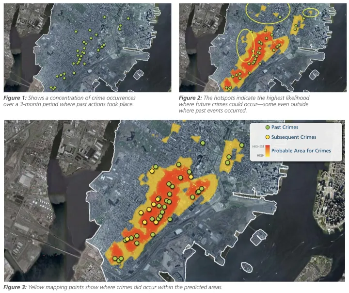

Selected Work

Data Platform / Product Strategy
Property Intelligence Platform MVP
Built a parcel-level property intelligence MVP that brought fragmented property data into one decision workflow. Designed the underlying data model and proved the foundation for a scalable platform.

Measurement / Publisher Workflows
Publisher Ad Quality Measurement
Redesigned publisher measurement around the way operators actually worked, replacing legacy reports with clearer, faster workflows. Expanded coverage into streaming and attention metrics, contributing to a 72% customer win rate in 2024.

Ad Tech / Standards Infrastructure
Mobile Ad Viewability Measurement
Scaled Open Measurement SDK across in-app supply so advertisers could verify mobile viewability through independent third parties. Helped strengthen trust in mobile media measurement.

Graph Analytics / Geospatial Intelligence
Graph-Based Intelligence Application
Built a graph and geospatial intelligence application that helped analysts connect siloed data, networks, and places in one view. Reduced time-to-context and made network-based risk assessments faster and more consistent.

Mobile Product / Situational Awareness
Mobile Situational Intelligence App
Extended situational awareness into the field with a mobile app for location-aware alerts and early open-source signals. Helped operational leaders keep context and respond beyond the desktop.

Risk Modeling / Geospatial Forecasting
Predictive Threat Assessments
Developed geospatial risk models that combined behavioral and environmental indicators into structured forecasts. Helped teams move from reactive planning toward earlier, evidence-based decisions.